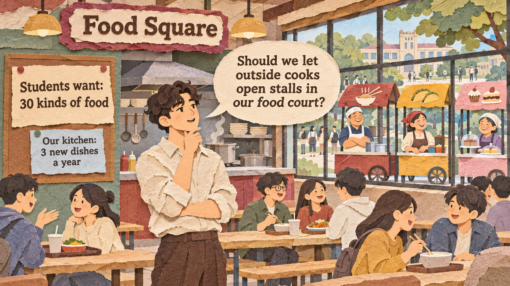
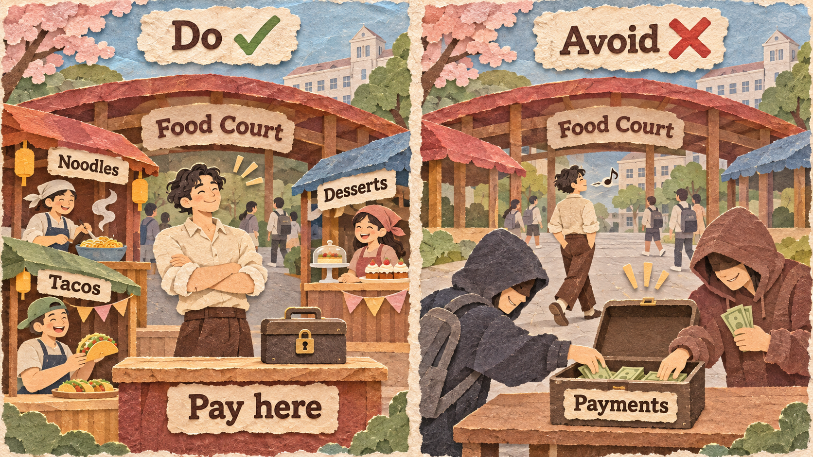
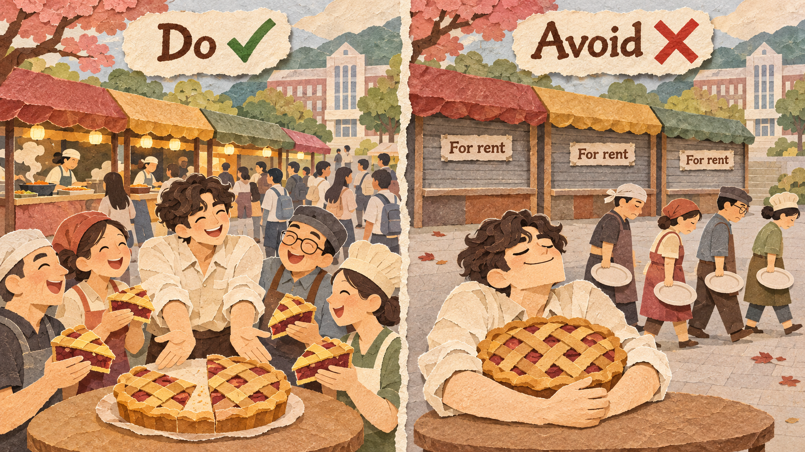
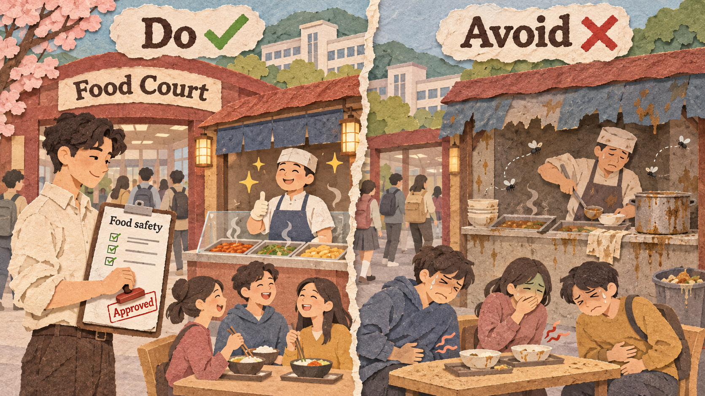
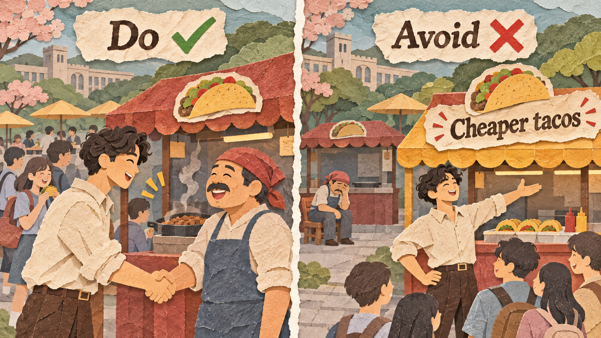

| Regular customers | 400 |
| Profit per regular, per year | $600 |
| Kinds of food students want | 30 |
| New dishes a year | 3 |
| Regulars who left last year | 60 |
| Cooks asking for a stall | 12 |
A company opens its product so that outside companies, called partners, can build on it. The company becomes a platform: it keeps the core and sets the rules, and many partners add features, apps, or ideas it could never build alone. Customers get more choice, partners get customers, and the platform becomes harder to leave.
Let partners add features around your product, but keep the parts that hold your value and customers' trust.

Food Square opens 8 stall spaces to outside cooks. The payment counter, the customer list, and the food-safety rules stay with Food Square.
Opening everything, including payments and the customer list, with no control. Partners can misuse it, and the platform loses its value.
Partners build only if they can earn more than it costs them. Give them customers, tools, and a fair share of the money.

Food Square keeps 0% of the first $10,000 each stall sells in a year, and 15% after that. New cooks get free equipment for a month.
Taking a large share of every sale, so cooks cannot cover their costs. No cooks join, and the stalls stay empty.
Customers trust the platform, not each small partner. Check partners before they start, and protect customers.

Every cook passes a food-safety check and a taste test before opening, and Food Square checks every stall once a month.
Letting anyone in without checks. One stall that makes customers sick damages trust in the whole food court.
Partners invest time and money because they trust you. Do not copy their products, change the rules suddenly, or push them out.

Before his own kitchen adds a dish, Adam checks that it does not copy a stall's menu. He tells cooks six months before any rule change.
Copying the most popular stall's dish at a lower price, or ending a cook's contract with no warning. Other cooks stop joining.
Shopify helps millions of businesses run online stores. Instead of building every feature itself, it lets outside developers sell apps to Shopify stores through its API and app store. In 2021, Shopify announced that developers would keep all of their first $1 million in app sales each year, and pay only 15% after that, instead of 20% before.
LEGO lets fans post designs for new LEGO sets online. If a design gets 10,000 supporters, LEGO reviews it. If LEGO makes the set, the fan designer receives a small share (1%) of its sales.
For years, outside apps such as Tweetbot and Twitterrific gave people other ways to read Twitter. In January 2023, Twitter suddenly cut these apps off with no warning, then changed its rules to ban them. Twitterrific shut down. In 2023, Twitter also stopped free access to its API and began charging developers (from $100 a month).
In 2014, a personality-quiz app on Facebook collected data from its users and their friends, up to 87 million people. The data was passed to Cambridge Analytica, a political consulting company. After this became public in 2018, the U.S. Federal Trade Commission fined Facebook $5 billion in 2019, partly for failing to control what outside apps did with users' data.
| EXAMPLE | RESULT | THE RULE THAT DECIDED IT |
|---|---|---|
| Shopify App Store | Good | A deal small developers want (Rule 2) |
| LEGO Ideas | Good | Open to fans, with clear checks (Rules 1 and 3) |
| Bad | Pushed out its partners overnight (Rule 4) | |
| Bad | Opened user data without control (Rules 1 and 3) |
Years to build alone = things customers want / things your team can add per year
Value = (customers who stay instead of leaving + new customers) x profit per customer per year
Platform's share = partner's sales x share %
Partner keeps = partner's sales - platform's share
What you give up to get something you value more.
Food Square: Adam gives up the full profit of cooking everything himself (he keeps only a share of stall sales) to offer many more kinds of food much faster.
A promise, written before you start, about which result would make you change your decision.
Food Square: "If a stall sells less than $2,000 a month for three months in a row, we will give its space to another cook."
Your task: For each move, ask: Does someone outside the company add something? What does the company keep? Someone outside adds something + the company keeps the core = open ecosystem.
| MOVE | WHO OUTSIDE ADDS? | WHAT THE COMPANY KEEPS | ANSWER | WHY (RULE) |
|---|---|---|---|---|
| Example: an e-book store lets small publishers sell their own books | Small publishers | Payments, price rules, reading app | Open | Rule 1 |
| (a) A game console lets outside studios sell games in its online store | ||||
| (b) A bubble tea shop hires one more staff member | ||||
| (c) A food delivery app lets restaurants list menus and keeps a share of each order | ||||
| (d) A phone maker makes its phones work only with its own chargers | ||||
| (e) A music app lets independent musicians upload songs and pays them per play | ||||
| (f) A snack company invites fans to send ideas for new chip flavors |
Your task: Which revenue-share rule should CupCorner choose? Step 1: fill in the calculation table (next slide). Step 2: recommend a rule with the template (slide after).
Your task: Calculate each row and write the result in the last column. Later rows use earlier rows.
| # | WHAT TO CALCULATE | HOW | YOUR ANSWER |
|---|---|---|---|
| 1 | Pastries sold in a year | 20 x 10 x 12 | |
| 2 | Pastry sales in a year | row 1 x $4 | |
| 3 | Bakery keeps if CupCorner keeps 30% | row 2 - row 2 x 30% | |
| 4 | Bakery keeps if CupCorner keeps 15% | row 2 - row 2 x 15% | |
| 5 | Bakery keeps with "0% of the first $10,000" | is row 2 below $10,000? | |
| 6 | Which rules leave the bakery more than its $8,000 cost? | compare rows 3 to 5 | |
| 7 | What CupCorner gives up with the third rule instead of 30% | row 2 x 30% |
Your task: Copy the template. Replace every [bracket] with your numbers from Step 1 and your own words. The example shows a finished answer.
Your task: Help Adam choose A or B for the next 12 months. Step 1: calculate (next slide). Step 2: write a memo. Step 3: present it in 2 minutes.
Today: 400 regulars / $600 profit a year each / 30 kinds wanted / 3 new dishes a year.
One more cook and new equipment: $48,000 a year. The kitchen adds 3 more dishes a year.
Expect 20 fewer regulars to leave and 20 new regulars.
8 stall spaces and a shared ordering screen: $15,000 once; food-safety inspector $500 a month.
Expect 8 cooks, 30 fewer leaving, 40 new regulars. Stall sales $15,000 a month; Food Square keeps 10%.
Your task: Calculate each row and write the result in the last column. Later rows use earlier rows.
| # | WHAT TO CALCULATE | HOW | YOUR ANSWER |
|---|---|---|---|
| 1 | Years to add all 30 kinds alone, today (Tool 1) | 30 / 3 | |
| 2 | Years with one more cook | 30 / 6 | |
| 3 | A: value of customers kept and won (Tool 2) | (20 + 20) x $600 | |
| 4 | A: result | row 3 - $48,000 | |
| 5 | B: costs | $15,000 + 12 x $500 | |
| 6 | B: value of customers kept and won (Tool 2) | (30 + 40) x $600 | |
| 7 | B: revenue share (Tool 3) | 12 x $15,000 x 10% | |
| 8 | B: result | row 6 + row 7 - row 5 | |
| 9 | B if only 3 cooks come: 10 fewer leave, 10 new, sales $5,000 a month | (10 + 10) x $600 + 12 x $5,000 x 10% - row 5 |
Your task: Copy the template. Replace every [bracket] with your choice, your numbers from Step 1, and your own words. The next slide shows a finished memo for CupCorner.
Explain an open ecosystem with the words platform, partner, API, core, and revenue share.
Design a revenue share that partners want to join.
Compare building alone with opening to partners and write a decision rule.
Chesbrough, H. W. (2003). Open Innovation. Harvard Business School Press.
Parker, G. G., Van Alstyne, M. W., & Choudary, S. P. (2016). Platform Revolution. W. W. Norton.
CNBC (2021, June 29). Shopify cuts app store fees for developers on first $1 million in revenue.
LEGO. What happens to my product idea after I reach 10,000 supporters?
TechCrunch (2023, January 19). Twitter third-party apps Tweetbot and Twitterrific stop working.
Federal Trade Commission (2019, July 24). FTC imposes $5 billion penalty on Facebook.
Open these slides only after you finish. Compare your numbers and reasons with the answers, and ask about any difference.
| MOVE | WHO OUTSIDE ADDS? | COMPANY KEEPS | ANSWER |
|---|---|---|---|
| (a) Game store | Studios | The store and its rules | Open (Rule 1) |
| (b) One more staff | Nobody | - | Not open |
| (c) Delivery app | Restaurants | Payments, delivery rules, data | Open (Rules 1, 2) |
| (d) Own chargers only | Nobody | Closed to outsiders | Not open |
| (e) Music app | Musicians | Player, payments, rules | Open (Rules 1, 2) |
| (f) Chip flavors | Fans (ideas) | Tests, production, brand | Open innovation |